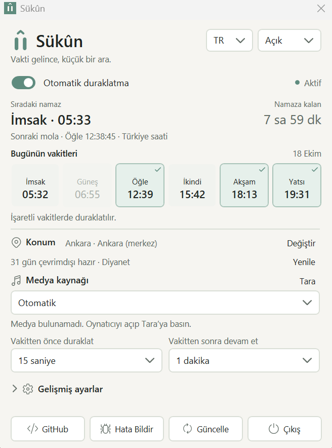

Sizden bir adım önce
Konumunuzu ve oynatıcınızı seçin. Hangi vakitlerde, ne kadar ara verileceğini siz belirleyin.
WINDOWS 10 / 11 · x64
Namaz vakti geldiğinde çalan müziği veya videoyu duraklatır. Belirlediğiniz süre sonunda kaldığınız yerden devam eder.
Yayımlanan Windows sürümü kontrol ediliyor.
Ücretsiz · Reklamsız · .NET kurulumu gerekmez
Henüz dijital olarak imzalanmadı. Windows uyarı gösterebilir veya çalıştırılmasını engelleyebilir. Güvenlik korumalarınızı kapatmayın.

Konumunuzu ve oynatıcınızı seçin. Hangi vakitlerde, ne kadar ara verileceğini siz belirleyin.
Diyanet’ten indirilen geçerli günler cihazınızda saklanır. Kayıtlı tarihlerde internet gerekmez.
Hesap yok, reklam yok, telemetri yok. Ayarlar cihazınızda kalır; kaynak kodu herkese açıktır.
Windows 10 (2004 ve sonrası) veya Windows 11 x64. EXE’yi kalıcı bir klasöre koyun. Kapat düğmesi uygulamayı tepsiye gizler; tamamen kapatmak için Çıkış’ı kullanın.
Bir şey yolunda gitmedi mi? Hata bildirin ↗